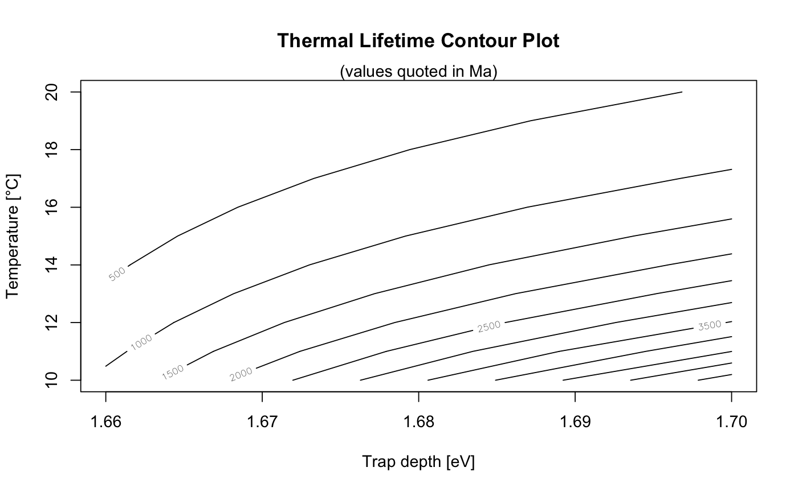

Calculates the Thermal Lifetime using the Arrhenius equation
The function calculates the thermal lifetime of charges for given E (in eV), s (in 1/s) and T (in deg. C.) parameters. The function can be used in two operational modes:
calc_ThermalLifetime(E, s, T = 20, output_unit = "Ma", profiling = FALSE, profiling_config = NULL, verbose = TRUE, plot = TRUE, ...)
Arguments
| E | numeric (required):
vector of trap depths in eV,
if |
|---|---|
| s | numeric (required):
vector of frequency factor in 1/s,
if |
| T | numeric (with default): temperature in deg. C for which the lifetime(s) will be calculted. A vector can be provided. |
| output_unit | character (with default):
output unit of the calculated lifetimes, accepted
entries are: |
| profiling | logical (with default): this option allows to estimate uncertainties based on given E and s parameters and their corresponding standard error (cf. details and examples section) |
| profiling_config | list (optional): allows to set configurate parameters used for the profiling (and only have an effect here). Supported parameters are:
Currently only the normal distribution is supported
(e.g., |
| verbose | logical: enables/disables verbose mode |
| plot | logical:
enables/disables output plot, currenlty only in combination with |
| ... | further arguments that can be passed in combination with the plot output. Standard plot parameters are supported (plot.default) |
Value
A RLum.Results object is returned a along with a plot (for
profiling = TRUE). The output object contain the following slots:
@data
| Object | Type | Description |
lifetimes |
array or numeric | calculated lifetimes |
@info
| Object | Type | Description |
Details
Mode 1 (profiling = FALSE)
An arbitrary set of input parameters (E, s, T) can be provided and the
function calculates the thermal lifetimes using the Arrhenius equation for
all possible combinations of these input parameters. An array with 3-dimensions
is returned that can be used for further analyses or graphical output (see example 1)
Mode 2 (profiling = TRUE)
This mode tries to profile the variation of the thermal lifetime for a chosen
temperature by accounting for the provided E and s parameters and their corresponding
standard errors, e.g., E = c(1.600, 0.001)
The calculation based on a Monte Carlo simulation, where values are sampled from a normal
distribution (for E and s).
Used equation (Arrhenius equation)
$$\tau = 1/s exp(E/kT)$$
where:
\(\tau\) in s as the mean time an electron spends in the trap for a given \(T\),
\(E\) trap depth in eV,
\(s\) the frequency factor in 1/s,
\(T\) the temperature in K and \(k\) the Boltzmann constant in eV/K (cf. Furetta, 2010).
Note
The profiling is currently based on resampling from a normal distribution, this distribution assumption might be, however, not valid for given E and s paramters.
Function version
0.1.0 (2018-01-21 17:22:38)
How to cite
Kreutzer, S. (2018). calc_ThermalLifetime(): Calculates the Thermal Lifetime using the Arrhenius equation. Function version 0.1.0. In: Kreutzer, S., Burow, C., Dietze, M., Fuchs, M.C., Schmidt, C., Fischer, M., Friedrich, J. (2018). Luminescence: Comprehensive Luminescence Dating Data Analysis. R package version 0.8.0. https://CRAN.R-project.org/package=Luminescence
References
Furetta, C., 2010. Handbook of Thermoluminescence, Second Edition. ed. World Scientific.
See also
graphics::matplot, stats::rnorm, get_RLum
Examples
##EXAMPLE 1 ##calculation for two trap-depths with similar frequency factor for different temperatures E <- c(1.66, 1.70) s <- 1e+13 T <- 10:20 temp <- calc_ThermalLifetime( E = E, s = s, T = T, output_unit = "Ma" )#> #> [calc_ThermalLifetime()] #> #> mean: 1.355559e+03 Ma #> sd: 1.51684e+03 Ma #> min: 1.095458e+02 Ma (@20 °C) #> max: 5.747042e+03 Ma (@10 °C) #> -------------------------- #> (22 lifetimes calculated in total)contour(x = E, y = T, z = temp$lifetimes[1,,], ylab = "Temperature [\u00B0C]", xlab = "Trap depth [eV]", main = "Thermal Lifetime Contour Plot" )mtext(side = 3, "(values quoted in Ma)")##EXAMPLE 2 ##profiling of thermal life time for E and s and their standard error E <- c(1.600, 0.003) s <- c(1e+13,1e+011) T <- 20 calc_ThermalLifetime( E = E, s = s, T = T, profiling = TRUE, output_unit = "Ma" )#> #> [calc_ThermalLifetime()] #> #> profiling = TRUE #> -------------------------- #> mean: 1.026501e+01 Ma #> sd: 1.207791e+00 Ma #> min: 6.755571e+00 Ma #> max: 1.675431e+01 Ma #> -------------------------- #> (1000 lifetimes calculated in total)#> #> [RLum.Results-class] #> originator: calc_ThermalLifetime() #> data: 2 #> .. $lifetimes : numeric #> .. $profiling_matrix : matrix #> additional info elements: 1